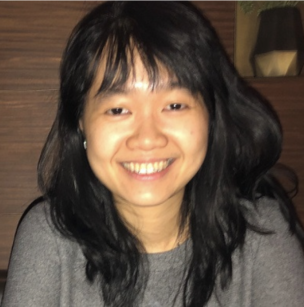

|

|
Professional Experience
- Product Analyst Intern @ Federal Reserve Bank of San Francisco
- Research Assistant @ Geisinger Health System
- Market Research & Data Analytics Coordinator @ UW Foster School of Business
Key Skillset
- Experimental, Survey, and UX Research
- Data Analysis and Visualization
- Product/Project Management Using Agile Methodologies
Professional Highlights
- Developed and managed customer success deliverables for 36 bank customers and managers, resulting in Tableau visualizations and Jira/Confluence automation.
- Oversaw and analyzed 8+ social science research projects using Qualtrics and R, contributing to published manuscripts.
- Analyzed and visualized business school rankings data using MS Office and Tableau, contributing to 2016 launch of Foster's MS in Entrepreneurship.
|